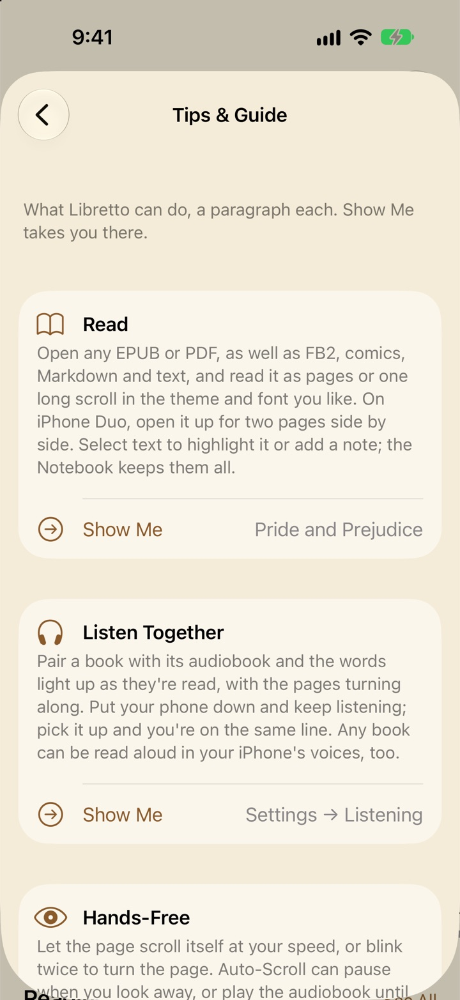
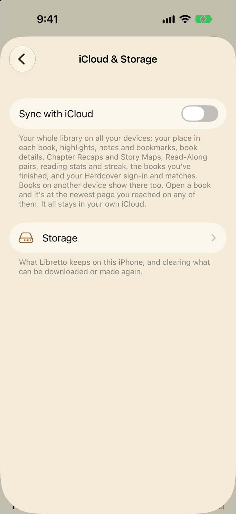

Troubleshooting
Practical fixes for the things that most often go wrong, grouped by what you were doing. Find the heading that matches what you’re seeing, and each one says why it happens and what to do.
Books and importing
A book won’t import or open
The usual reasons, most likely first:
- It’s locked with DRM. Books bought from Kindle, Apple Books, Kobo and most other stores are locked so only that store’s app can open them, and Libretto can’t. Look for a DRM-free copy: many publishers and stores sell them, and ⋯ → Add to Library → Free Classics has thousands of public-domain books.
- It’s a format Libretto doesn’t read. Libretto opens EPUB, PDF, TXT, Markdown, HTML, RTF, FB2 and CBZ comics, and MP3, M4A, M4B, AAC, FLAC, WAV, AIFF and CAF audio. Kindle formats (AZW, AZW3, MOBI) and CBR comics aren’t supported. You’ll see “… isn’t a supported book format.”
- The file is damaged or incomplete. Messages like “The file isn’t a valid EPUB (ZIP) archive.”, “The archive is damaged” or “This EPUB has no readable chapters.” mean the file itself is broken, often from a download that didn’t finish. Download it again and add it again.
It says the book is already in your library
Libretto doesn’t add a book twice: one with the same title, author and format as one you have (even one you’ve renamed with Edit Details) is skipped, with “… is already in your library.” Search the Books tab for it. If you want to replace it with a different copy, remove the old one first (Book Details → ⋯ → Remove from Library…), then add the new one.
An audiobook came in as several books, or in the wrong order
Audio files only become one audiobook when they arrive together. Pick all the files at once in ⋯ → Add to Library → Choose Files…, or put them in a zip, or drop a folder of them (one book per folder) into Libretto’s folder in the Files app. Files that came in one by one are separate books: remove them and add them again together.
Without chapter markers in the files, each file is a chapter, in file-name order. If the order is wrong, rename the files with numbers at the front (01, 02, 03…) and add them again.
The title or author is wrong
Files from around the web often have odd titles, like “Moby Dick (z-lib.org) [Retail]”. Open the book’s Book Details and choose ⋯ → Edit Details… (for an audiobook, long-press it and choose Edit Details…). Your library, the reader, Home, the widgets, the Lock Screen and Hardcover matching all use the new title and author. Use the File’s Title and Author puts the original back.
“Not enough free space”
Libretto checks there’s room before it imports or downloads, and keeps some to spare for your device. Free up space, then try again:
- In Libretto, open Settings → iCloud & Storage → Storage. Largest Books and Largest Audiobooks show what takes the most room (tap one to open it and remove it), and Free Up Space clears what can be downloaded or made again. See Storage.
- In the Settings app, General → iPhone Storage (or iPad Storage) shows what else is using space.
Libretto is taking up a lot of space
Audiobooks are almost always the biggest part. Open Settings → iCloud & Storage → Storage to see it by kind. Removing an audiobook you’ve finished frees the most. With Store Books in iCloud on, a book you remove from this device stays in iCloud and shows with a cloud, so you can download it again later. Free Up Read-Along Data deletes the transcripts Libretto made while preparing your pairs, and reading along keeps working.
Reading
Tapping or swiping doesn’t turn the page
- Lock Page is on. While the page controls are showing, only their buttons turn pages. Turn it off with ⋯ → Lock Page in the book, or in Settings → Appearance → Layout.
- The narration is playing. With Turn Pages While Listening off, the pages follow the narration until you pause it, and a turn shows “Pages follow the narration while it plays”. Pause, or turn the setting on in Settings → Listening.
- Auto-Scroll is running. Your page style switches to scrolling while it runs. Stop it from the menu or ⋯ → Stop Auto-Scroll, and your pages come back at the same place.
Pages turn when I don’t mean them to
Turn on Lock Page (⋯ → Lock Page, or Settings → Appearance → Layout). While the page controls show, only their buttons turn pages, so holding the device never turns one by accident. Long-press still selects text. If you use Blink to Turn Pages, set Double-Blink Speed nearer Quick in Settings → Hands-Free, so ordinary blinking isn’t taken for a turn.
The font or text size won’t change
In a PDF the text is fixed in place, so the Aa sheet has only the page theme, layout, page turns and Today’s Target Bar. In an ebook, the Original font uses whatever the book’s publisher chose: pick another under Aa → Font.
My place or reading time wasn’t saved
- You chose Just Browse. Opening a book you haven’t started asks Start Reading?. Just Browse saves nothing: not your place, reading time, stats or Hardcover progress. The menu says “Browsing: your progress isn’t saved” with a Start Reading button. Close it after reading on and it asks Save Your Progress?.
- You opened it from your Notebook. A visit to a highlight keeps your place where it was. Tap Read from Here to move it.
- You jumped there. Pages you skip with the contents, search or the scrubber don’t count toward your pages read, so a big jump adds nothing to your stats.
I want to start a book over
Open its Book Details and choose ⋯ → Reset Progress… (for an audiobook, long-press it and choose Reset Progress…). It goes back to the beginning, and opening it asks again whether to start reading. A paired book and audiobook share a place, so both go back. Your highlights, bookmarks and reading stats stay, and your shelf and progress on Hardcover aren’t changed. It asks first.
I dismissed a tip and want to see it again
Tips appear once each, the first time a feature helps. To bring them all back, open Settings → About → Tips & Guide and tap Show Tips Again. Each one shows again the next time it helps (sometimes from the next time you open Libretto). The same page explains every feature in a paragraph, with Show Me to go there.

Read-Along and audiobooks
“Couldn’t Prepare Read-Along”
Preparing listens to the audiobook on your device and matches it to the book word by word. The message under the alert says what stopped it:
- “Read-Along works with EPUB and text books, not PDFs or comics.” Pair the audiobook with an EPUB of the book instead.
- “The book’s or audiobook’s files are missing. Try importing them again.” One of the two was removed or didn’t finish downloading. Add it again; if it’s in iCloud, tap it to download it first.
- “On-device speech recognition isn’t available on this device.” Your device can’t transcribe audio, so Read-Along can’t be prepared on it. If your other device can, pair them there: with Sync with iCloud on, the finished pairing reaches this device, which then reads along without preparing (it needs both the book and the audiobook on it too).
- Anything else. The first pairing downloads Apple’s speech model, which needs an internet connection. Connect and try again.
Open the Read-Along page (Home’s Read-Along section → See All, or its tab).
Tap the pair, then Try Again. (Or long-press it and choose Try Again.)
If it fails again, long-press the pair, choose Unpair…, and pair them again. The book and audiobook stay in your library.
It’s still preparing
Read-Along is ready once 20 minutes from where you’ll listen are matched, usually within a minute (“Ready · preparing 42%”). The rest carries on while you read, and in the background when iOS allows. Open a part that isn’t matched yet and the work moves there (“Preparing this part of the book…”). If it seems stuck, check the pair on the Read-Along page: if it says Paused, long-press it and choose Resume Preparing.
“These files may be different editions”
This shows under ⋯ → Read Along when preparing has finished and fewer than six in ten of the book’s words could be matched to the narration. Common causes:
- The audiobook is abridged, or it’s a different translation or edition from the ebook.
- The audiobook is in a different language from your device. Libretto listens in your device’s language (or English if it can’t), so a French audiobook on an English iPhone matches poorly.
Reading along may still work in the parts that match. For the best result, pair an ebook and audiobook of the same edition. To start over, Unpair… and pair them again.
The marker drifts, or the narration is somewhere else
- The audio isn’t in the book. Opening credits, closing music and bonus excerpts show a grayed-out cover with a countdown to the text and Skip to Text.
- You turned away from it. With Turn Pages While Listening on, the narration plays on while you look around. Back to Narration takes you back to it, and Play from Here moves it to your page.
- That part isn’t matched yet. Wait for preparing to reach it, or open it to move the work there.
- It’s a little off everywhere. Long-press the word being read and choose Play from Here. If the whole book is off, see “These files may be different editions” above.
Read Aloud sounds robotic
Automatic uses the most natural voice installed on your device. Download Enhanced or Premium voices in the Settings app under Accessibility → Spoken Content → Voices, then choose one in Settings → Listening → Read Aloud → Voice (or ⋯ → Read Aloud → Voice in the book). Hear a Sample lets you try it. Apps can’t use Siri’s own voice.
Pressing my headphones twice skips a whole chapter
That’s the default. To skip by a few seconds instead, set Settings → Listening → Headphone Presses to Skip Forward and Back. The skip lengths are just above it.
Story features and Apple Intelligence
There’s no ✨ button, or Catch Me Up isn’t working
Catch Me Up, Remind Me and Chapter Recaps are written by Apple Intelligence on your device. Go through these in order:
Does your device support Apple Intelligence? It needs an iPhone 15 Pro or later, or an iPad with an M-series or A17 Pro chip. On other devices the ✨ button doesn’t appear, and Settings → Story says the device doesn’t support it. Recaps and Story Maps written on your other devices still show there.
Is Apple Intelligence turned on? If not, Catch Me Up says “Turn on Apple Intelligence in Settings → Apple Intelligence & Siri to use Catch Me Up.” Turn it on in the Settings app.
Has it finished downloading? Just after you turn it on, iOS downloads Apple Intelligence in the background, and Libretto says it’s “still getting ready”. Leave the device on Wi-Fi for a while, then try again.
Is Catch Me Up on? Check Settings → Story. Remind Me has its own switch there too.
Is it the right kind of book? Catch Me Up works in ebooks with text and in PDFs, not comics. Chapter Recaps are for ebooks.
Catch Me Up gives an error
- “Apple Intelligence can’t read this book’s language yet.” Apple Intelligence supports a set list of languages, and this book isn’t in one of them yet.
- “Apple Intelligence wouldn’t recap this part of the book.” Its content filter can stop it at violent or adult scenes. Try another choice: touch and hold ✨, or use the sheet’s Recap… menu.
- “Apple Intelligence is busy. Try again in a moment.” Something else is using it, often a chapter recap being written. Wait a few seconds.
- “There’s nothing before this page to recap yet.” You’re at the start of the book.
The first recap takes a long time
That’s expected. The first Story So Far in a book reads every chapter before your place, a piece at a time, which can take a minute or two a third of the way into a novel. Libretto keeps notes on what it read, so later recaps of the same book take seconds.
A chapter has no recap
Chapter Recaps only cover chapters you’ve read, so nothing ahead is spoiled. Check which of these it is on the book’s Recaps page (⋯ → Recaps & Story Map):
- You haven’t finished it. A chapter is recapped once you’ve read most of it and moved on. The one you’re in says “You’re reading this one. It’s recapped once you finish it.”
- You jumped past it. Chapters you skip with the contents, search, a link or the scrubber don’t count as read, so they aren’t recapped. If you want one anyway, tap the faint ✨ beside it in Contents: it asks first, then writes it.
- It’s waiting. Recaps are written one chapter at a time, only while Libretto is open. “Waiting to be written.” has Write Now.
- Apple Intelligence wouldn’t write it. Its content filter can stop it at violent or adult scenes. Tap Try Again.
- It’s not a chapter. The cover, contents, acknowledgments and short title pages don’t get recaps.
- You were browsing. With Just Browse, nothing you read is kept, so nothing is recapped.
- It’s a PDF. Chapter Recaps and the Story Map are for ebooks. Catch Me Up works in PDFs.
Recaps don’t show on my other device
With Sync with iCloud on, recaps and Story Maps go to your other devices by themselves, even ones without Apple Intelligence, for the same book file. If they haven’t arrived, see Sync with iCloud below. With sync off, open Recaps & Story Map on the device that has them, then ⋯ → Send to Another Device…, and AirDrop the file to the other device. Open it in Libretto there and choose Add Recaps.
A recap got something wrong
The model that runs on your device is small, so recaps are mostly right but can mix people up or add a detail that isn’t in the book. Remind Me can do the same. If a book’s recaps have gone astray, the Recaps page’s ⋯ → Write Them Again throws them all away and writes them again, a chapter at a time.
Sync with iCloud
Something hasn’t synced yet
Changes arrive in the background, but iCloud doesn’t always tell a device about them straight away. Libretto catches up whenever it opens or comes back to the front.

Open Libretto on the device you read on last, so it sends its changes, then on the device that’s behind.
On each, open Settings → iCloud & Storage and check Sync with iCloud is on, and read the line under it.
Make sure both devices are signed in to the same Apple Account, with iCloud on for Libretto in the Settings app.
What the status line means:
- “Up to date”: this device has everything iCloud has. If something is still missing, the other device hasn’t sent it yet.
- “Waiting for a connection”: it’ll sync as soon as you’re online.
- “Sign in to iCloud in the Settings app, and turn on iCloud for Libretto.”: do just that, in the Settings app.
- “iCloud storage is full. Libretto will try again.”: free up iCloud space (see below).
- “iCloud is restricted on this device.”: Screen Time or a device manager is blocking iCloud. Whoever set that up can lift it.
A book opens at the wrong place on another device
Libretto opens a book at the newest page you reached on any device. When that isn’t where this device was, a pill at the bottom says “Continued from iPad” (or wherever you read last): tap it to go back to where this device was.
- It opened at an older page. The other device hasn’t sent its place yet. Open Libretto on it, wait for it to sync, then come back. Your place moves when you open the book, when you come back to it, or after you’ve left it alone for a couple of minutes, never in the middle of reading.
- It jumped ahead when you didn’t expect it. You (or someone else on your Apple Account) read further on another device. Tap the pill to go back.
- Nothing carries over at all. The two devices may have different files of the book. Libretto knows a book by its file, so two different downloads of the same title are two different books, each with its own place and highlights. Use one copy: with Store Books in iCloud on, remove this device’s copy, then tap the one showing a cloud to download the other device’s.
A book shows a cloud or another device’s symbol
It’s in your library, but its file isn’t on this device yet. A cloud means it’s in iCloud: tap it to download. Books under 100 MB download by themselves; larger ones, like most audiobooks, wait for a tap unless Download Larger Books Automatically is on. A device symbol means it’s only on that device: turn on Store Books in iCloud there so it goes up to iCloud, or add the same file here. Books in iCloud also need iCloud Drive turned on for Libretto in the Settings app.
iCloud storage is full
- The footer under Store Books in iCloud says how much of your iCloud your books take. Audiobooks are the big ones.
- Audiobooks sent to an Apple TV are kept in iCloud while they’re there, about 29 MB an hour. Remove the ones you’ve finished in Settings → Apple TV.
- To take a book out of iCloud, long-press it where it shows with a cloud (a book that isn’t on this device) and choose Delete from iCloud…. Devices that have it keep it, and your place, highlights and notes stay.
- To stop new books going to iCloud, turn off Store Books in iCloud. Books already there stay.
- Apple’s own iCloud storage settings show everything else using your space.
Someone else’s reading is in my stats
Every device signed in to your Apple Account adds its reading to your stats and streak. Open Settings → iCloud & Storage, find the device under Other Devices, and tap Remove. Its reading days, sessions, finished books and places are deleted from iCloud and all your devices. Your books, highlights and notes stay. More in Sync with iCloud.
Hardcover
A book won’t match, or matched the wrong book
A book with an ISBN in its file links to Hardcover by itself. Others are matched by title and author, so a file with them wrong won’t match.
Fix the title and author first: Book Details → ⋯ → Edit Details…. A book waiting to be matched is looked up again with the new ones.
Open Settings → Hardcover → Linked Books. Books under Needs Confirming are waiting for you: tap one and choose the right book.
For a wrong match, open the book’s Book Details and choose ⋯ → Hardcover → Change Match….
If Hardcover doesn’t have the book, it shows under Not on Hardcover. For your own documents and anything else with nothing to match, choose ⋯ → Hardcover → Ignore in Book Details: it’s never matched or sent.
My progress isn’t showing on Hardcover
- Check when it sends. Settings → Hardcover → Send Progress may be Once a Day or Manually. Tap Send Now to send it straight away. Last Sent says when it last went, and shows any error in red.
- Check the book is linked. Only linked books are sent. See above.
- It only sends forward. Automatic sends never lower your page on Hardcover, and only send reading you did after the book was linked.
- You were browsing. Reading with Just Browse isn’t sent.
The page numbers on Hardcover look wrong
Progress goes to Hardcover in pages of the edition the book is linked to. If that edition is much longer or shorter than yours, choose a closer one: Book Details → ⋯ → Hardcover → Edition.
It says “Signed out”
Hardcover ended the sign-in. Open Settings → Hardcover and tap Reconnect. Your links and settings are kept.
There’s no Shelf tab
The Shelf tab shows once Hardcover is connected. If it’s connected and still missing, it may be switched off, or the tab bar may be full: check Settings → Home & Tabs. More in Hardcover.
Apple Watch and Apple TV
Libretto isn’t on my watch
On your iPhone, open the Watch app, find Libretto under Available Apps, and install it. Your watch needs watchOS 11 or later.
My books haven’t reached the watch
- Books copy while your watch is near your iPhone, one file at a time, so hours of audio take a while. Settings → Apple Watch → On Your Watch shows how each is coming along (“Text on its way”).
- Send Books I’m Reading sends the five books you’ve read most recently in Continue on Home. Send any other book from its Book Details with Send to Apple Watch.
- PDFs stay on your iPhone.
- No audio? Check Settings → Listening → Audio to Take with You isn’t Off. Audio goes for up to three of the books you’re reading.
The watch says “Can’t reach your iPhone”
Turning iPhone pages from the watch and Read Here need your iPhone nearby, with Bluetooth or Wi-Fi on. Bring them closer together and try again. To turn pages, a book has to be open on the iPhone; otherwise the watch says “Nothing’s open on your iPhone.” Reading you do on the watch while they’re apart isn’t lost: your place goes to the iPhone once they’re back in reach.
Open on iPhone doesn’t open the book
Open on iPhone uses a notification to take you to the book. Open Settings → Apple Watch on your iPhone and tap Allow Notifications under Open on iPhone (or, if they’re off, Turn On Notifications in Settings). Without notifications, opening Libretto on your iPhone within a few minutes still opens the book at the watch’s place.
Looking away doesn’t play on the watch
With Play on Apple Watch on, the narration plays only on the watch, and Libretto has to be open there. The page footer on your iPhone says what it’s waiting for, like “Open Libretto on your watch to listen” or “Copying audio to your watch: 45%”. Open Libretto on the watch, or wait for the copy to finish.
Apple TV shows no books
Apple TV gets your library through iCloud, from your iPhone. Sign in to iCloud on the Apple TV with the same Apple Account as your iPhone, check Sync with iCloud is on in Libretto on your iPhone, and open Libretto on the iPhone so it can send your books’ text. PDFs don’t go to the TV.
Apple TV has no audiobook
Audiobooks go to the TV only when you ask for them, since they’re big.
On the TV, open the book and choose Get Audiobook from iPhone.
On your iPhone, tap the notification that arrives. With Libretto open on the iPhone, it starts straight away.
No notification? On your iPhone, open Settings → Apple TV and allow notifications, or tap Send beside the request there. If it says “Not on this iPhone”, the audiobook’s file is on another device: send it from that one. If sending stopped partway, tap Carry On Sending there (on the TV, Ask Again). The Apple TV row only appears in Settings once a TV has synced with Libretto. More in iPad, Duo, Watch and TV.
Widgets and Siri
A widget isn’t up to date
Libretto updates its widgets as you read and when you leave the app. iOS limits how often an app’s widgets can refresh in the background, so while an audiobook plays with Libretto in the background, only changes you’d notice go through. Opening Libretto and going back to the Home Screen brings them up to date. Reading on another device reaches this device’s widgets once this device has synced, which happens for sure when you next open Libretto here. The streak, Weekly Pages, Yearly Goal and Finish By widgets move on at midnight by themselves.
A widget shows the wrong book
Touch and hold the widget, choose Edit Widget, and pick a book, or Most Recent for Currently Reading (Most Pressing for Finish By, the book due soonest).
Siri doesn’t understand, or says it can’t
- Say Libretto’s name in the request: “Continue reading in Libretto”, “Resume listening in Libretto”, “Open Dune in Libretto”. The Shortcuts app lists every ready-made phrase on Libretto’s page.
- Siri learns your books’ titles as your library changes. If it doesn’t know a new one yet, open Libretto once and try again.
- “No audiobook is playing in Libretto.” or “There’s nothing to continue.” mean there’s nothing to act on yet: play or open something in Libretto first.
- Catch Me Up through Siri needs Apple Intelligence, as it does in the app (above).
More in Widgets, Siri and Shortcuts.
Still stuck?
Write in and you’ll hear back from the person who makes Libretto. The quickest way is Settings → About → Contact Support in the app, which puts Libretto’s version in the subject for you. Or find the address on the Support page.
It helps to say what device you’re on, its iOS version, the book’s format, and what you see on screen. A screenshot of the message, or of the status line in Settings, is even better.